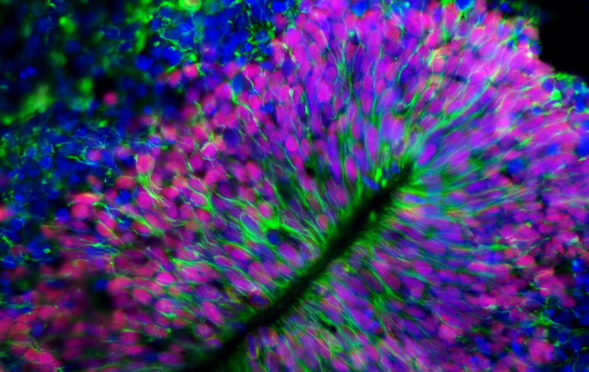

Alzheimer's Society
APOE-mediated microglial functions in Alzheimer's disease
Using human brain organoids to define how APOE-dependent microglial states influence neural tissue in Alzheimer's disease.
Research theme
We investigate how ageing changes human neural cells and brain interfaces, and how these changes create vulnerability to Alzheimer's disease and other age-related neurological disorders. Our work combines iPSC-derived neural cells, organoids and multicellular assembloids to study cellular senescence, autophagy, neuroimmune interactions and choroid plexus biology.
Human models of ageing
Ageing changes the behaviour of neurons, glial cells and brain barrier tissues, as well as the way these populations respond to stress and inflammation. We build human cell and 3D tissue models that allow these processes to be studied experimentally and connected to mechanisms relevant to Alzheimer's disease.
Our approach ranges from defined iPSC-derived neural cultures to hippocampal and cortical organoids, multicellular assembloids and choroid plexus models.
Cellular mechanisms
Brain ageing is accompanied by changes in cellular stress responses, protein and organelle turnover, inflammatory signalling and the capacity of cells to recover from damage. We use human iPSC-derived neural cells and 3D neural models to define how these processes change with age and how they contribute to disease-relevant phenotypes.
A major focus is cellular senescence: how senescent states arise in neural and non-neural cell populations, how they alter the surrounding tissue environment, and whether they increase vulnerability to neurodegenerative stress. In parallel, we investigate impaired autophagy in human hippocampal organoids as a mechanism relevant to Alzheimer's disease.

Neuroimmune interactions
Microglia are central to the way the brain responds to damage, inflammation and accumulating pathology. We develop human brain organoid and assembloid systems that incorporate microglia so that disease-associated pathways can be studied in a multicellular neural context.
Our Alzheimer's Society-funded work focuses on how APOE influences microglial function in Alzheimer's disease. By combining genetically defined human cells with 3D brain models, we aim to understand how APOE-dependent changes in microglia alter their interactions with neural cells and contribute to disease-associated stress.
Brain interfaces
Ageing and neurodegeneration are shaped not only by neurons and glia, but also by the interfaces that regulate the brain's extracellular and cerebrospinal fluid environment. We are developing human choroid plexus models to investigate how ageing and disease alter barrier, secretory and immune functions at the blood–CSF interface.
This provides a route to study how changes in the choroid plexus may influence inflammatory signalling, tissue homeostasis and communication between the circulation, cerebrospinal fluid and neural tissue. It also connects our neurodegeneration programme with our broader interest in building more complete human multicellular brain models.
Current & emerging programmes
Alzheimer's Society
Using human brain organoids to define how APOE-dependent microglial states influence neural tissue in Alzheimer's disease.
Alzheimer's Research UK
Investigating how disruption of autophagy contributes to disease-associated changes in a human hippocampal organoid model.
No single experimental model captures all aspects of human brain ageing or Alzheimer's disease. We therefore use complementary systems ranging from defined human neural cell cultures to hippocampal and cortical organoids, multicellular assembloids and choroid plexus models. Comparing across these systems lets us ask which mechanisms are cell-intrinsic and which emerge only through interactions among neural, immune, vascular and barrier cell populations.